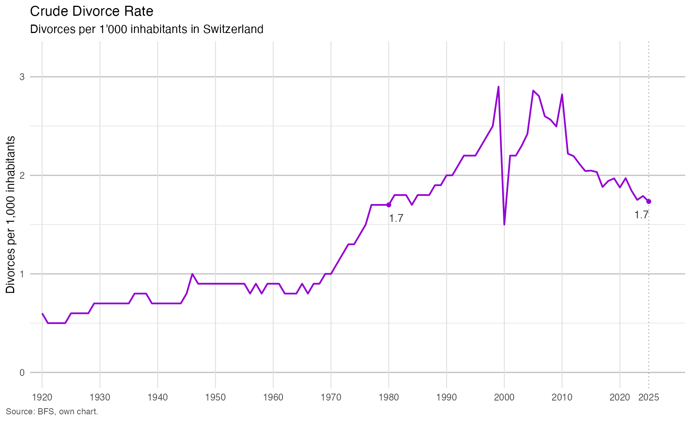
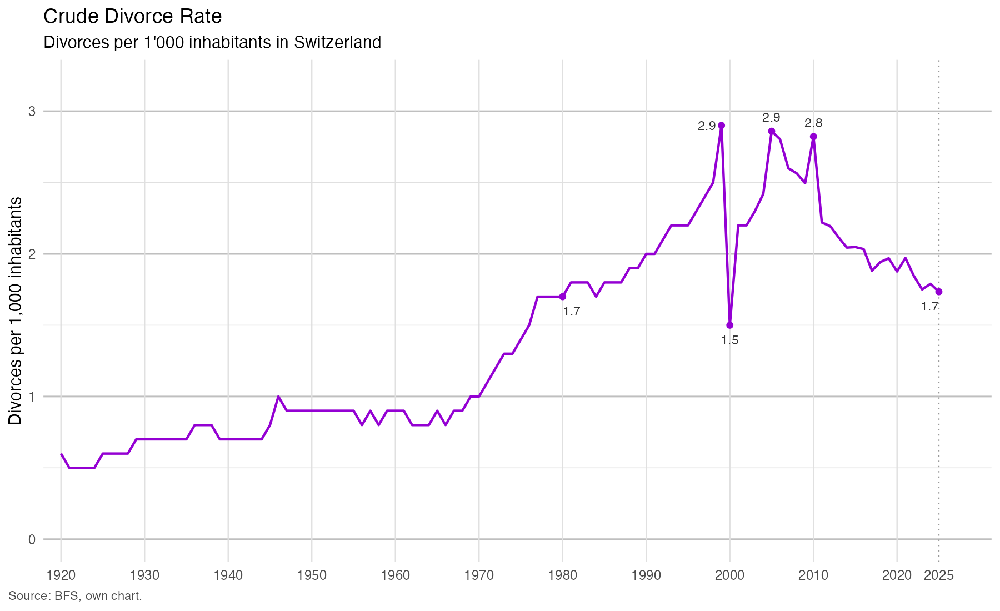
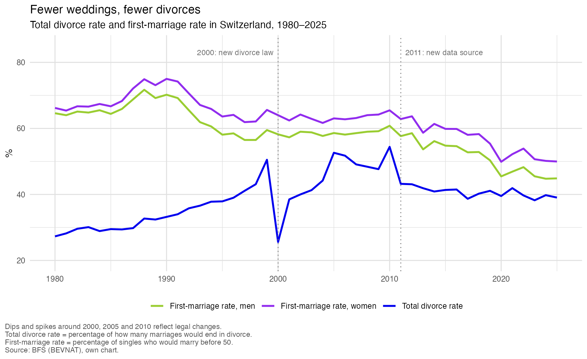

Data story
Are We Really Divorcing More? What Swiss Data Says
Why the Swiss divorce rate is full of peaks and bumps, and what lies behind them
I grew up in a family where my parents separated early on, so I was used to having split parents. Throughout my childhood, I watched most of my friends' parents divorce. I felt like there were more divorced parents than ones who were still together. It was a constant topic of conversation, as we would talk about who we were spending the weekend with, and how some parents wouldn't even talk to each other. When I talked to my mother about it, she often told me that, when she was growing up, most parents were married and that, when someone got divorced, it caused a scandal in the village. Later, during my teenage years, I came to believe that divorce was a form of liberation for women. I thought that, due to the growing feminist movement and the progression of society, more women would divorce in recent years. Headlines in the Swiss media seemed to draw a similar picture:
However, the data tells a different story. A glance at the Swiss Federal Statistical Office (FSO) data reveals that the idea of an increasing divorce rate is not what the crude divorce rate shows. Switzerland's crude divorce rate measures the number of divorces per 1,000 inhabitants. In 2025, this figure was 1.7 per 1,000 inhabitants. This was the same as in 1980, and since the last peak in 2010, the rate has dropped noticeably. So all my preconceptions and the first look at the data opened the question: Why are fewer couples divorcing than I thought, and is this decline even real?

1A look at the numbers
So I went to the numbers. All of them come from the Swiss Federal Statistical Office (FSO).
From the 1920s to the mid-1960s, the divorce rate was low and remained fairly stable. Then, from 1965 onwards, it increased dramatically until the late 1990s. To understand why the divorce rate first increased and is now decreasing, we need to understand why it started to rise in the mid-1960s.
In the 1960s, the economy was booming following the war. Family life was changed during this time by many factors, such as an increasing proportion of women in the labour force, the women's liberation movement, and the sexual revolution in the US (Stevenson & Wolfers, 2007, p. 28). In the Swiss context, important factors included changes in divorce law, rising acceptance of divorce, and decreasing influence of the church on family life. These changes made the divorce process easier, which likely contributed to the increase (Schaer & Bodenmann, 2008, p. 2).
2Peaks and bumps
From 1998 to 1999, the divorce rate rose rapidly before almost halving in 2000 (from 2.9 to 1.5). What caused this massive drop? My first guess was that it had something to do with the turn of the millennium.
Were people so scared of a possible apocalypse that they stayed together?
Research offers a more realistic answer. In 2000, Switzerland revised its divorce law, and the peak in 1999 was largely an anticipatory effect. The new law abandoned the principle of fault for the breakdown of a marriage, which also changed how alimony was decided, and made divorce by mutual consent the standard procedure (Federal Statistical Office, 2001, p. 1).
Initially, I thought that the couples themselves were in a hurry. Under the old law, the question of fault could influence how much alimony was paid, so if you could blame your spouse for the breakdown of the marriage, you might pay less. Perhaps many people wanted to divorce while this option was still available, which pushed the rate up before the new law took effect. However, when you consider the timing, this theory does not stand up: approximately 70% of the increase compared to 1998 occurred in November and December alone. According to the FSO, it was not the couples who were in a hurry; it was the courts that rushed to close their pending cases before the new law came into force (Federal Statistical Office, 2001, p. 1).
After the drop in 2000 the divorce rate climbed again at a similar pace as before, and reached its 1999 level around 2005. This peak was also linked to a change in the law: in 2004, the separation period required for a divorce against the will of the other spouse was shortened from four to two years, so many couples could suddenly get divorced. The last peak in 2010 can be partly explained by yet another legal change, the unification of the cantonal civil procedure legislation in 2011. Like in 1999, the courts probably finished cases earlier than usual to close them under the old rules (Federal Statistical Office, 2020, p. 3).
In 2010, the year of the last peak, I was six years old. That is roughly where my impression comes from, and back then it wasn't wrong: the crude divorce rate was 2.8 per 1,000 inhabitants, far above the 1.7 of the early 1980s, when my parents were growing up. Since then the rate has fallen back to 1.7, similar to my parents' youth. So today, statistically, divorce is no more common than it was then.

3Is the decline real?
So what could explain the decline in the divorce rate since 2010? One factor that contributes to this decline is the way in which data is collected. Until 2010, the courts reported divorces to the FSO. Since 2011, however, the FSO has collected the data directly from the civil status register (Infostar). For divorces involving people without Swiss citizenship, the register entry is only compulsory if their data are already in the system. Therefore, some of these divorces are probably missing from the statistics. In 2011, the number of divorces fell by 20.4%, which the FSO marks as a break in the series, advising caution when interpreting this change (Federal Statistical Office, 2012, p. 2). How much of the drop is a measuring effect, the FSO does not say. But it cannot be the whole story: according to the Démos newsletter (Federal Statistical Office, 2009), the number of divorces had already been falling slightly since 2006, five years before the change in data collection. This suggests that other factors play a role as well.
Another possible factor is the change in marriage patterns. Historically, marriage was the only way to live together and start a family. In today's world, it's become increasingly common for couples to live together before getting married. This has an impact on the divorce rate in two ways. Firstly, separations of unmarried couples are not included in divorce statistics. This means that some break-ups simply never get counted, even though nobody behaves any differently. Secondly, couples who do marry may be more committed. People may marry less out of convention since marriage has become a choice rather than a precondition for living together. People often marry only after living together for a while or when a child is born (Höpflinger, 2020, p. 23). This could make their marriages more stable because couples who knew each other for a longer period before getting married also tend to separate less often (Rosenkranz & Rost, 1998, p. 58).
Because couples live together first, the decision to marry is also postponed. In 1960, women got married for the first time at an average age of 25, and men at 27. Today, the average age at first marriage is around 30 for women and 32 for men (FSO, 2025). Later marriages tend to be more stable, as the Statistical Office of the Canton of Zurich (2019) points out, which reduces the risk of divorce.
Another reason for the falling divorce rate could be the weakness of the crude divorce rate, which relates divorces to the total population, including children and unmarried people. A better measure is the total divorce rate. This shows what proportion of marriages would end in divorce if the behaviour of a given year remained the same. Since 2011, it has remained between approximately 38% and 43%. Therefore, among married couples, divorce has only slightly become rarer in recent years. But if marriages are not ending less often, why is the crude rate falling?
One answer lies in the number of people who marry in the first place. The first-marriage rate illustrates this. It indicates how many people would get married before the age of 50 if the behaviour stayed the same. In 2025, that is about 50% of women and 45% of men, compared with 65% of women and 61% of men in 2010. So fewer people marry today.
The figure shows both trends side by side: the first-marriage rate keeps falling, while the total divorce rate has been fairly flat since 2011. This fits the idea that those who still marry are a more committed group. But it does not prove it. Divorces in a given year mostly come from marriages formed years earlier, so the effect of fewer marriages would only show up with a delay.

4Why couples split up
The statistics can only show us when and how much things changed, but they cannot tell us why couples split up in the first place. For that, we have to look at what divorced people themselves say. Surveys among divorced people list several reasons for divorce. The five most frequently named are unfulfilled expectations and disappointment, followed by the partners developing in different directions, communication problems, a missing shared view of the future and a different lifestyle (Bodenmann et al., 2002, p. 6). There are differences between the genders as well as between short and long marriages. Women tend to report more causes than men, citing communication deficits, a lack of respect or support, or a lack of personal development within the relationship (Höpflinger, 2020, p. 105). Men, by contrast, are more likely to see the end of a relationship as unexpected or abrupt (Bodenmann et al., 2002, p. 9). In shorter marriages, financial difficulties, disagreements about roles and raising children dominate. In longer marriages, however, problems within the partnership itself are more common, such as diverging interests and the loss of romantic love (Höpflinger, 2020, p. 105).
To understand whether couples behave differently today, it helps to look at how the reasons for divorce have changed over time. Before the 1960s, marriage primarily served economic, household and parenting purposes as well as the control over women's and men's sexuality (Höpflinger, 2020, p. 14). Divorce was rare and heavily stigmatised, and was condemned by the Church. However, in the late 1960s and 1970s, love became the main reason for getting married, and sexuality, cohabitation and parenthood were no longer necessarily linked. Consequently, when emotional intimacy disappeared, the purpose of the marriage was lost. At the same time, greater education and a greater female presence in the labour market gave women financial independence. This removed the economic pressure to remain in an unhappy relationship. Social taboos surrounding divorce have faded, and the law has shifted from rules based on fault to irretrievable breakdown and mutual consent (Höpflinger, 2020).
So what does today's “divorce culture” look like? Three things stand out. First, people expect a lot more from a relationship. Marriage is no longer needed to get by, so partners want more from it than just a household (Höpflinger, 2020, p. 105).
Second, everyday stress. Work, double workloads and childcare put constant pressure on couples, and models of divorce suggest that this stress spills over into the marriage. It eats into time together, communication and emotional connection (Bodenmann et al., 2002, p. 17).
Third, more people divorce late in life. Early divorces have dropped a lot, partly because many couples now live together before they marry, which may act as a kind of filter. Living longer, the “empty nest” once the children have left, retirement and long-standing emotional distance can all lead older couples to separate (Bucher, 2019, p. 7).
5Back to my question
So why are fewer couples divorcing than I thought, and is this decline even real?
I had the impression that more couples divorce today than did in my parents' generation. According to the crude divorce rate, however, the data tells a different story: it increased from the 1960s onwards, but is now back down to 1.7 per 1,000 people, which is the same rate as in 1980. The total divorce rate tells a slightly different story, however. It has not returned to its 1980 level of 27%, but stands at around 39%. Therefore, among married couples, divorce is still more common than it was in 1980. The reason it only looks the same per inhabitant is probably that fewer people marry.
Most of the peaks and bumps in the divorce rate were caused by changes in the law rather than changes in behaviour. Today, the total divorce rate has stabilised at around 40%. Has the way couples think about divorce stayed the same, though? Not really. Divorce is no longer scandalous, women are financially independent, and partners have high expectations of relationships. When emotional closeness disappears, many people see no reason to stay together.
So, is the decline real? Partly. Some of it stems from legislation and data. I would argue that the reason the divorce rate is no longer falling is that couples who marry today have often been together for a long time and often already have children. So, for them, marriage is a conscious decision, not just the next step. I think this makes them a more committed group, which is why their marriages end less often than one might expect. This is my interpretation, not something that can be proven by the data. It fits with the falling marriage rate. A German study also found that couples who had known each other for a long time before getting married were less likely to separate (Rosenkranz & Rost, 1998, p. 58). Therefore, I believe that people who marry today play a part in keeping the divorce rate lower than it otherwise would be.
So was my impression from my childhood wrong? Not really. I grew up in a time when divorce was very common, and many of my friends' parents were divorced. Today, according to the crude rate, divorce is no more common than it was during my parents' youth. However, among married couples, divorce is still more common than it was back then, with around two in five marriages ending in divorce if behaviour remains as it is. What has changed is how many people marry at all.
Sources
- Bodenmann, G., Bradbury, T., & Maderasz, S. (2002). Scheidungsursachen und -verlauf aus der Sicht der Geschiedenen. (14), 5–20. https://www.ssoar.info/ssoar/handle/document/28251
- Bucher, H.-P. (2019). Weniger, aber vermehrt späte Scheidungen (statistik.info 2019/09). Statistisches Amt Kanton Zürich. https://www.zh.ch/de/news-uebersicht/medienmitteilungen/2019/10/weniger-aber-vermehrt-spaete-scheidungen.html
- Federal Statistical Office. (2001). Scheidungen 2000: Halbiert! [Pressemitteilung]. https://statistik.admin.ch/de/asset/13514
- Federal Statistical Office. (2009). Démos Newsletter Informationen aus der Demografie [Statistischer Bericht]. Federal Statistical Office Section Demography and Migration. https://statistik.admin.ch/fr/asset/347044
- Federal Statistical Office. (2012). Die Bevölkerung der Schweiz 2011 (Nos 348–1100). FSO. https://statistik.admin.ch/de/asset/348332
- Federal Statistical Office. (2020). Scheidung [Demos 1/2020]. https://statistik.admin.ch/de/asset/13307848
- Federal Statistical Office. (2025). Eheschliessungen und Scheidungen. https://statistik.admin.ch/de/themen/bevoelkerung/heiraten-scheidungen#eheschliessungen
- Höpflinger, F. (2020). Bevölkerungswandel Schweiz: Soziodemografische und familiendemografische Entwicklungen im Langzeitvergleich. https://www.researchgate.net/publication/344414209_Bevolkerungswandel_Schweiz
- Rosenkranz, D., & Rost, H. (1998). Welche Partnerschaften scheitern? Prädiktoren der Instabilität von Ehen. 47–69. https://www.ssoar.info/ssoar/handle/document/29164
- Schaer, M., & Bodenmann, G. (2008). Wie kommt es zu einer Scheidung? Eine Analyse aus psychologischer Sicht. https://www.researchgate.net/publication/50915695_Wie_kommt_es_zu_einer_Scheidung_Eine_Analyse_aus_psychologischer_Sicht
- Stevenson, B., & Wolfers, J. (2007). Marriage and divorce: Changes and their driving forces. Journal of Economic Perspectives, 21(2), 27–52. https://www.jstor.org/stable/30033716
Data used for the charts
- Federal Statistical Office. Rohe Heirats- und Scheidungsziffern (gr-d-01.01.03m-su). Source: BEVNAT, ESPOP, STATPOP. https://statistik.admin.ch/de/asset/36144465
- Federal Statistical Office. Scheidungen nach Ehedauer und zusammengefasste Scheidungsziffer (je-d-01.06.02.01.02, gr-d-01.06.01.02.04-su). Source: BEVNAT. https://statistik.admin.ch/de/asset/36837609
- Federal Statistical Office. Zusammengefasste Erstheiratsziffer, ledige Männer und Frauen (gr-d-01.06.01.02.05-su). https://statistik.admin.ch/de/asset/36838231